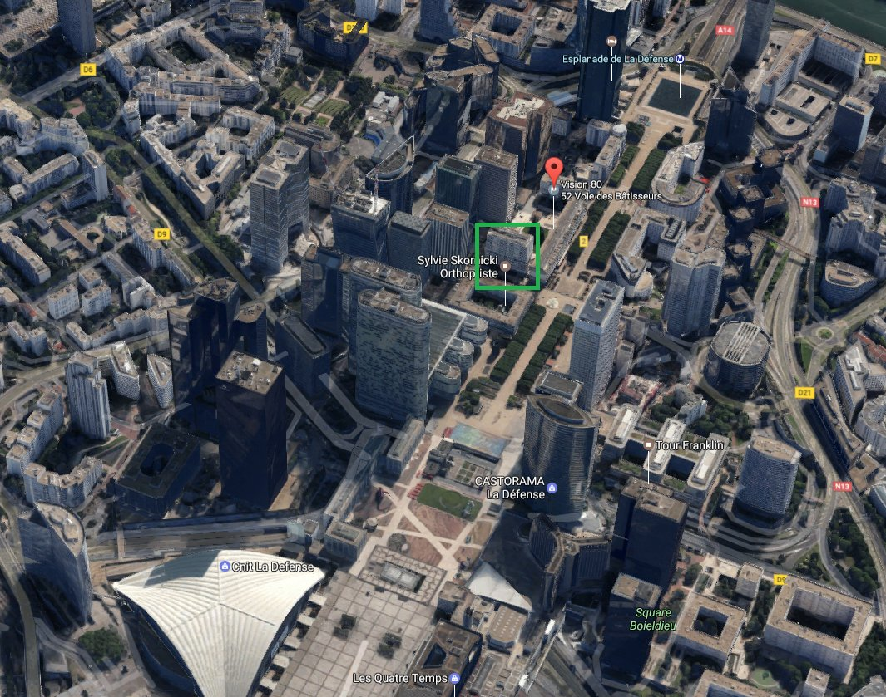
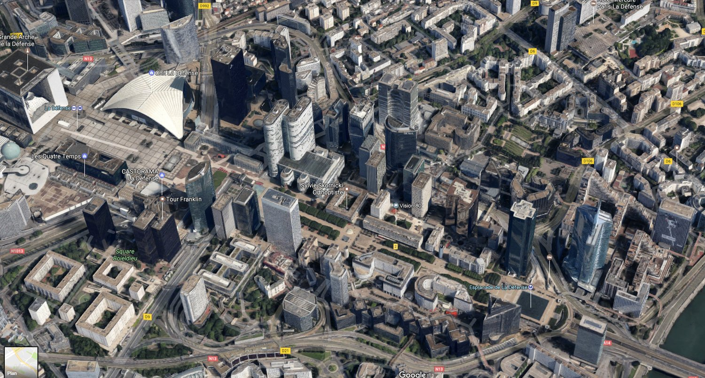
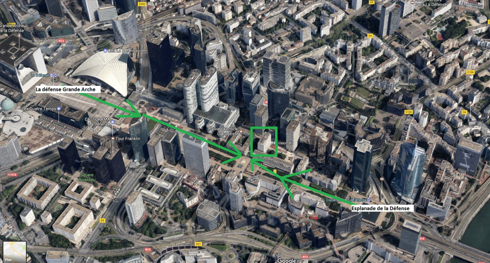
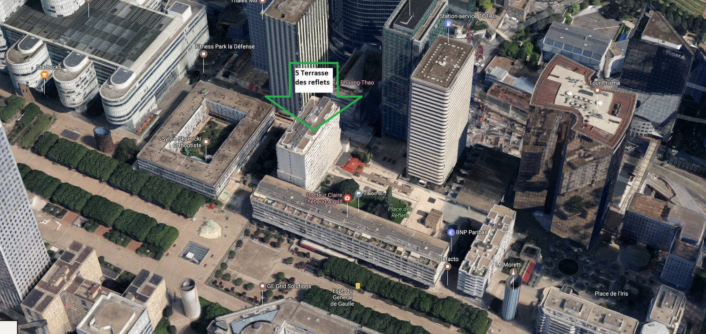
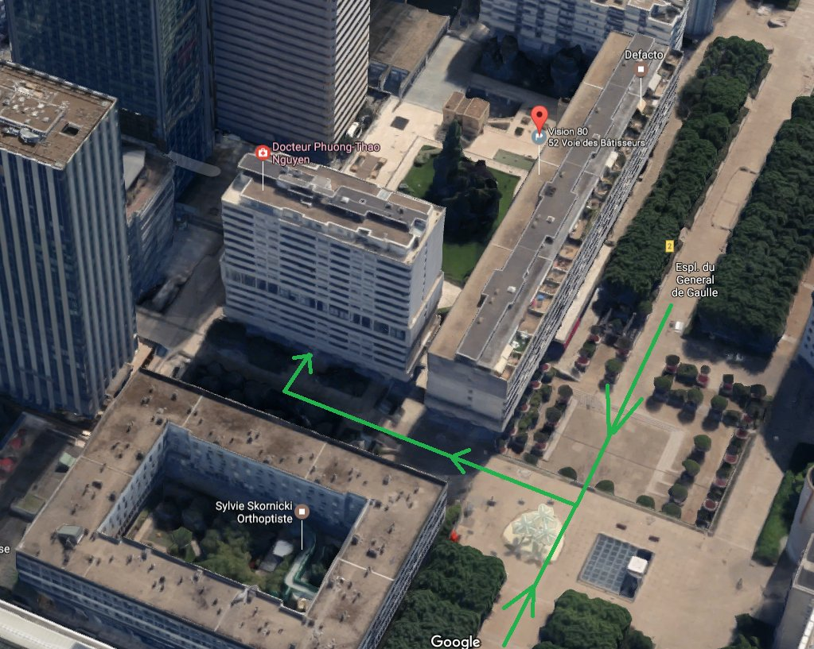
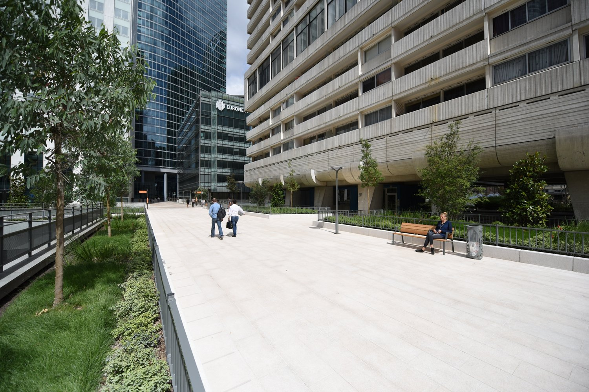

Stations : Esplanade de la Défense, ou La Défense Grande Arche. Avec le RER A, vous pouvez sortir à La Défense Grande Arche. D'une façon ou d'une autre, vous vous trouverez sur le parvis de la Défense.

Vous arrivez sur le parvis de la Défense.

Restez sur le parvis de la Défense, et allez vers l'immeuble dans le carré vert.

Plus proche.

D'un autre angle : vous allez en bas de l'immeuble, et vous pourrez sonner à l'interphone.

